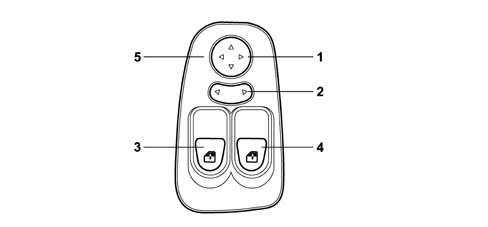
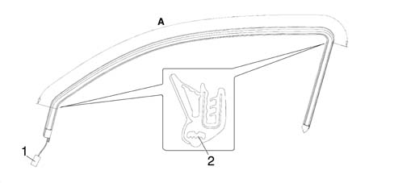
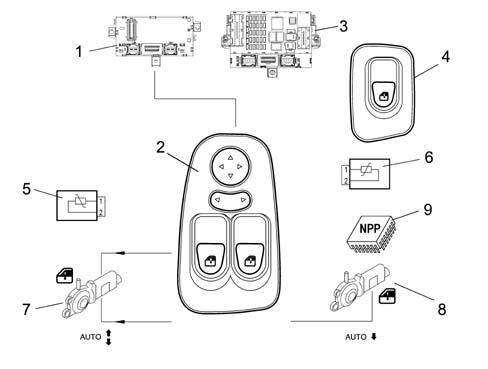
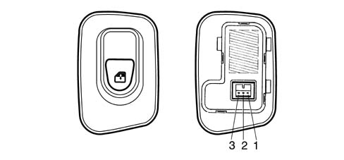
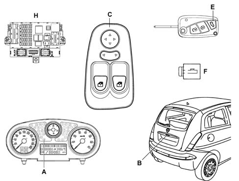

7005M front electric windows
- Path
- Descriptions > 70 FITTINGS > 7005 PASSENGER COMPARTMENT FRONT SIDE DOORS > 7005M front electric windows
- Kind
- system description
- Applies to
- all engines; all production periods
- Interactive page
- https://sloeber94.github.io/elrnDB-lYpsln/en/#/2427454
Applies to: all engines; all production periods
COMPOSITION
The driver's door node (NPG) houses the following controls:

1 - Door mirror positioning knob 2 - L driver's side R passenger side electric mirror selector 3 - L window control button 4 - R window control button 5 - Panel
Applies to: all engines; all production periods
OPERATION
The Driver's Door Node performs the following functions:
- receives and sends information on the B-CAN line (e.g. diagnosis, warning lights, commands, data);
- interconnects with the driver's front door wiring
FOR PIN OUT CHECKS, SEE ASSEMBLY 5505 ELECTRICAL CIRCUIT FOR INSTRUMENTS/INDICATORS.
Applies to: all engines; all production periods
Front windows with manual up, down controls or, on certain versions, automatic with antipinch facility.
The system consists of driver and passenger side window controls on the doors; anticrush sheaths on the right front window and left front window plus two R and L window motors.
The control unit (NPG) controls operation of the driver and passenger side window motors.
The driver and passenger side window motors are controlled manually or automatically in accordance with a specific strategy.
Movement takes place with the ignition key ON and also with the key OFF.
Applies to: all engines; all production periods
(A) IGNITION KEY ON (Key-ON)
Movement takes place as described in the table
Driver's Side Front Window | Passenger Side Front Window | |
|---|---|---|
UP control | MANUAL movement AUTOMATIC movement | MANUAL movement |
DOWN control | MANUAL movement AUTOMATIC movement | MANUAL movement AUTOMATIC movement |
Applies to: all engines; all production periods
(B) IGNITION KEY OFF (Key-OFF)
Movement is only manual and timed by the NBC, which controls service relay 2 supplying the NPG and NVB nodes. Note that service relay 2 is located on the facia control unit (CPL) is active with the ignition key ON and deactivated temporarily during start-up.
If an INT signal is not received from the ignition, the NBC maintains service relay 2 supplying the windows and sun roof active and changes the timing for 3 minutes ± 10% but deactivates it immediately when one of the two front doors is opened.
If a window control (front or rear) is pressed within three minutes of controlling service relay 2, the NBC resets the timer for a further 3 minutes.
Applies to: all engines; all production periods
CONTROL BUTTONS
Right window up/down rocker switch
Left window up/down rocker switch
Each time the window function control buttons are pressed, the buzzer in the NQS goes off as confirmation: changes of status from depressed/released (rocker buttons) must be supplied via the CAN network. The NQS is responsible for managing duration and tone and then implementing indications in the presence of simultaneous controls.
Applies to: all engines; all production periods
MANUAL SYSTEM
Mode is manual when the user starts and stops the system by hand by means of the control buttons. The motor stops when the buttons are released.
Applies to: all engines; all production periods
AUTOMATIC SYSTEM
Mode is automatic when movement is started by pressing the control button for a period in excess of a preset value. In automatic mode, window arrest (electric power to window motor cut off) is brought about by:
- the window reaching the upper or lower end of its travel
- the safety system (anticrush)
- once a new raise or lower control has been pressed.
This is regulated by controlling motor current, which must be self-adaptive, and by managing the anticrush sensor.
Applies to: all engines; all production periods
DISABLEMENT
Glass movement is disabled by:
- Vbatt = 16 V (re-enabled for Vbatt = 15.5 V)
- Vbatt = 10 V (re-enabled for Vbatt = 10.5 V)
The battery voltage level is supplied to the network by means of a specific message.
Applies to: all engines; all production periods
ACTIVATION WITH REMOTE CONTROL
1) SUPERCLOSURE (only if the anticrush seal is present)
On certain versions, door closure takes place when the lock button is pressed. The windows begin to rise when the button is held down for more than 4 seconds. When the button is released, movement is suspended. The button must be pressed again for 4 seconds to resume movement.
2) SUPEROPENING
When the release button is pressed, the doors are opened and the courtesy light comes on simultaneously The windows begin to descend when the button is held down for more than 4 seconds. When the button is released, movement is suspended. The button must be pressed again for 4 seconds to resume movement.
Applies to: all engines; all production periods
DRIVER'S SIDE WINDOW
The control unit should not operate when the control buttons are pressed for less than 60 ms.
Manual movement is activated if the control key is pressed for time: Ta = Activation time > 60 ms and < 300 ms (short control)
Automatic operation is activated if the control button is pressed for longer than: Ta > 300 ms (long control).
The window power supply is enabled with the key on and the battery supplying the control unit.
The control unit must cut off window operation in the following cases:
- at end of travel - either manual (within a time of 400 ms ± 50 ms) or automatic (within a time of 300 ms ± 30 ms);
- automatic arrest, after pressing the up or down control again.
Applies to: all engines; all production periods
PASSENGER SIDE WINDOW
The passenger side window can be raised only manually. It can be lowered manually or automatically in the same way as described for the driver's side.
If controls issued simultaneously from driver and passenger side do not tally, no movement should take place.
Applies to: all engines; all production periods
ANTIPINCH SENSORS ON DRIVER AND PASSENGER SIDE WINDOW SEALS
These take the form of an electrical circuit in a sheath applied to the driver and passenger windor frame upper seal. The control unit (NPG) interface contains two analogue inputs (signal and earth) with A/D (i.e. conversion from analogue to digital signal) for the microcontroller.
These sensors are made up of a resistor with a value of 400 to 1800 ohms under normal conditions, i.e. when the glass does not compress the seal.
The NPG downloads information about the presence or absence of an obstacle when the window is closed (raised) via the anticrush seals.
Under these conditions, the resistance signal reaching the control unit must be between 0 and 400 ohms during manual or automatic operation.
As a consequence of this event, the control unit must immediately suspend window travel and immediately (max. 30 ms) reverse it for 400 ms.
Special software strategies are naturally also preset to handle changes in the electrical properties of the sensors due to wear, ageing etc.
When the stop is reached, all error conditions are reset under the following conditions:
- upper stop reached;
- at a key-OFF, key-ON operation
- once the window has been lowered for at least 400 ms.
Applies to: all engines; all production periods
SAFETY SENSOR SEAL
The diagram below shows the safety sensor seal.

A - Area for fitting safety sensor 1 - Connector 2 - Safety sensor
Applies to: all engines; all production periods
SAFETY SENSOR SEAL
If there is an obstacle between the window and the seal, this function immediately interrupts the closing movements and reverses the operation of the motor to open the window.
The safety sensor is housed inside the profile of the seal along the entire length of section A, illustrated in the previous diagram.
Applies to: all engines; all production periods
DIAGRAM SHOWING FRONT ELECTRIC WINDOW
Wiring diagram

1 - Body computer node (NBC) 2 - Driver's door window control 3 - Driver's door node control unit (NPG) 4 - Passenger side window control 5 - Driver's side anticrush seal 6 - Passenger side anticrush seal 7 - L front window motor 8 - R front window motor 9 - Passenger door node control unit (NPP).
Applies to: all engines; all production periods
PASSENGER SIDE SWITCH
Pin out.

1 - Earth 2 - Window up/down control negative signal 3 - Symbol lighting
Applies to: all engines; all production periods
Specifications
If opposing keys are pressed simultaneously, no control takes place. Alternatively the down control takes precedence.
Because the download circuits are separate (right and left sides of the car), it must be possible to identify:
- seal wiring circuit open;
- seal wiring short circuit;
- short circuit to VB (wiring short circuited to Vbatt);
- short circuit to earth (wiring short-circuited to GND).
If one of the above situations occurs, the NPG emits an error status (FAIL) signal to the CAN network. Conversely, when the condition ceases, the NPG deletes the error status (FAIL).
When the control unit detects that the anticrush protection is not working properly, it takes the following action:
- does not permit automatic window raise;
- allows raising to take place in steps with manual operation (max. consecutive 200 ms of control);
- does not allow AUTO up and down operation
Applies to: all engines; all production periods
PUDDLE (COURTESY) LIGHTS MANAGEMENT
When the front doors are opened, the driver and passenger microswitches send a negative signal (earth) to the body computer node (NBC). This wakes up the CAN network and communicates door status to the driver's door node (NPG). The latter switches on the lights in the doors. The function is active with key-off or key on.
The connector is fitted with two independent outlets that are shared inside. These control the bulbs in the doors simultaneously.
When one of the front doors is opened, the bulbs come on for a maximum time of 3 minutes as a single event. Once the time has elapsed, the puddle lights may be relit only if one of the doors is re-opened.
Closure of both doors brings about immediate bulb deactivation.
If battery voltage is beneath a 10V threshold, the NPG must not control activation of the puddle lights.
Applies to: all engines; all production periods
DOOR OPENING SIGNAL
This function is active only with the key ON
Negative signals (earth) from the door and boot open microswitches are sent to the Body Computer Node (NBC) which sends the CAN network input status to the driver's door node (NPG); the instrument panel node (NQS) manages activation of the warning light.
Applies to: all engines; all production periods
LOCK/RELEASE FROM REMOTE CONTROL OR BUTTON ON BOOT
The NPG receives a request to control boot opening via a remote control message or a negative control signal from a button on the central facia control panel.
Once the message has been received or button active status has been downloaded, the driver's door node (NPG) controls an external relay for 0.5 seconds and opens the boot (the relay control is positive).
Each control button depression is followed by a confirmation beep n a buzzer in the instrument panel node (NQS). The CAN network indicates the rocker button status change from depressed to released. The instrument panel node (NQS) is responsible for managing buzzer duration and tone and when it should be activated in the presence of commands.
With the key ON, the control button determines boot opening when vehice speed is 0 km/h.
With the key in STOP position, the control button signal is downloaded as long as the CAN network is active: 3 minutes from k-off, when one of the doors is opened for 3 minutes.
Applies to: all engines; all production periods
DOOR MIRRORS
The doors mirrors are moved electrically and heated to demist.
This second function is managed by the NBC because the demisting coil is electrically connected to the heated rear window control relay.
Mirrors can be moved along the L/R axis and the up/down axis one at a time by means of a joystick and a selection slide with three stable statuses (L) left, central rest position and (R) right.
Movement is active with the key ON and maximum duration is 8 seconds.
Mirror movement is disabled by:
- Vbatt = 16 V (re-enabled for Vbatt = 15.5 V)
- Vbatt = 10 V (re-enabled for Vbatt = 10.5 V)
- Lack of INT signal (from CAN network)
The voltage level (charge status) is present on the CAN network.
Applies to: all engines; all production periods
MANAGING OUTDOOR TEMPERATURE
The temperature information is supplied in degrees Celsius (°C). The value to be transmitted (every 500 msecs)is calculated by means of a special algorithm that takes into account a value downloaded (every 50 ms) from an NTC sensor on the door mirror and appropriately filtered.
The information in degrees Celsius (°C) is precise to 0.5 °C and is sent via the CAN network for nodes NCL-NQS-NBC. These users are responsible for applying relevant heating effect strategies:
- NCL climate control strategies;
- NQS permanent value display;
- NBC automatic demist strategies
When the battery is disconnected and reconnected, the control unit is able to ensure the CAN network is supplied with the outdoor temperature reading. If the driver's door node (NPG) detects circuit open or short circuit status for 10 seconds, it communicates the anomaly to the users via a special signal.
Applies to: all engines; all production periods
SUPPLEMENTARY FUNCTIONS OF DRIVER'S DOOR NODE (NPG) WITH OPTIONS FITTED
The driver's door node (NPG) enables the following functions only with options packages fitted:
- front window closure from recirculation control;
- front window closure from pollution sensor;
- front window closure from remote control.
Applies to: all engines; all production periods
WINDOW CLOSURE FROM RECIRCULATION CONTROL
The function is active with the ignition key ON, provided the electric window system is fitted with efficient anticrush seals. Briefly, when the driver's door node (NPG) receives recirculation status information from the climate control system (NCL) node via the CAN network, it controls activation of the electric window actuators. The control is implemented in sequence at 50 ms intervals in the following order:
- passenger window;
- driver's window
Applies to: all engines; all production periods
CLOSING WNDOWS FROM POLLUTION SENSOR
the function is activated with the ignition key in the ON position. The climate control system software is designed to activate recirculation mode if the air to be taken in to the vehicle passenger compartment is polluted. The climate control system node (NCL) sends a signal via the CAN network to indicate that recirculation is activated to the driver's door node (NPG) , which activates the front window central locking.
Applies to: all engines; all production periods
BOOT OPEN CONTROL
.

A - Instrument panel (NQS) boot open indicator display (warning light turned on via CAN from Body Computer) B) - Boot control on number plate mount C) - Driver door node (NPG) D) - Body Computer (NBC) E) - Ignition key (remote control) M1 remote boot opening control button M2 led indicating dispatch of code to receiver (Body Computer) F) - - Boot opening electromagnet
Applies to: all engines; all production periods
BOOT OPENING
The body computer node receives a release request from a dedicated button on the radio remote control unit with key off and sends the driver's door node (NPG) the information required to activate the external opening control relay. Opening via a single, short press on the facia button, the function is fully controlled by the node (NPG). No optical/acoustic signals accompany boot opening.
With the key ON, the control button determines boot opening when vehice speed is 0 km/h.
Wtih the key OFF, the control button signal is received as long as the CAN remains active.
- 3 minutes from the Key-off,
- when one of the doors is open for 3 minutes